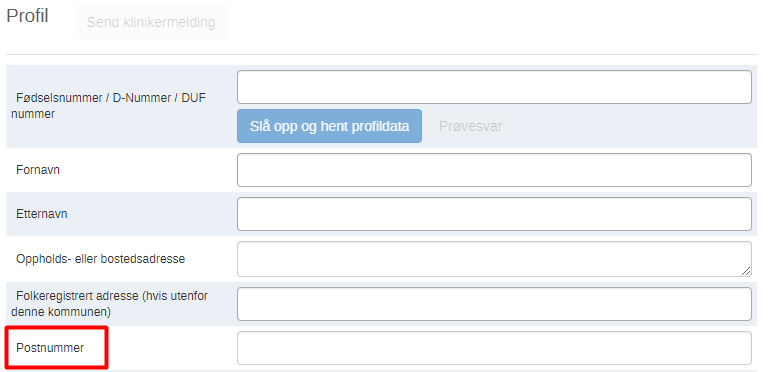
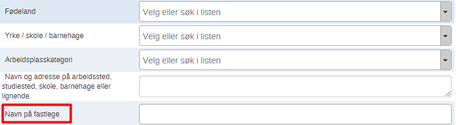
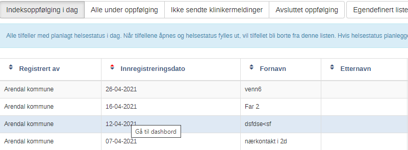

Release notes version 1.16.0
Nytt felt i indeks og nærkontaktsprogrammet
I ny versjon har eget felt for postnummer blitt synlig. Dette er plassert under feltene for adresser i profilregistreringen i begge program.

Arbeidsprosess:
- Gå til tracker capture
- Velg enten indeks eller nærkontaktsregistrering
- Trykk registrer. Du vil nå se at postnummer har dukket opp.
Nytt felt i nærkontaktregistreringsprogrammet.
Etter forespørsel så har feltet: navn på fastlege blitt lagt til i nærkontaktregistreringen:

Arbeidsprosess:
- Gå til tracker capture
- Velg programmet: nærkontaktregistrering og oppfølging
- Trykk registrer. Du vil nå se at feltet: navn på fastlege har dukket opp under navn på arbeidssted, studiested, skole, barnehage eller lignende.
Arbeidsliste - nyeste først
I denne versjonen er arbeidslistene fått ny standard. De sist registrerte vil komme øverst som standard. I eldre versjoner kom gamleste registrert opp først som standard.
